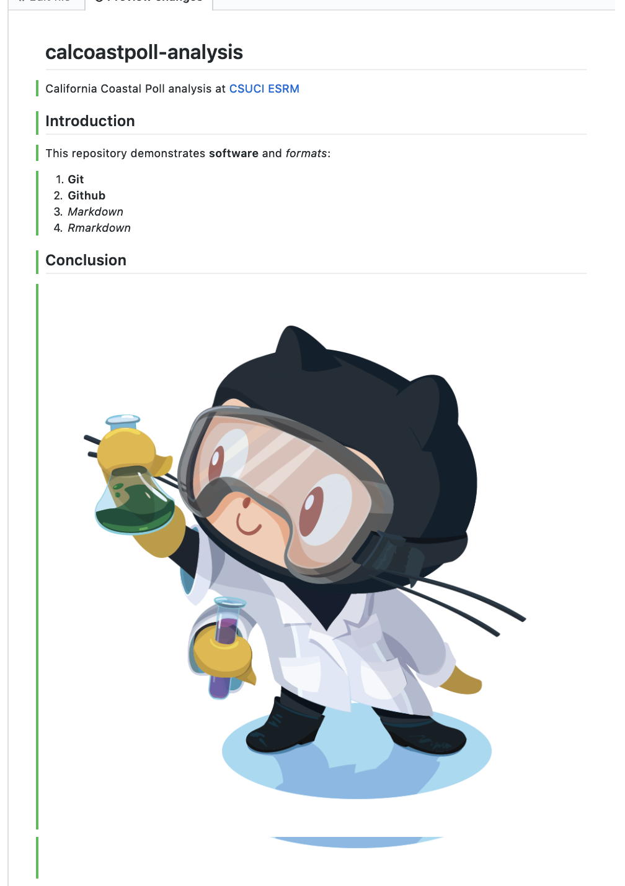

Lesson 2 Collaborate: git, Github
2.1 Overview
Objectives
- Create a repository in Github
- Learn basic markdown to format text in
README.md. - Commit changes.
- Create
docs/index.mdas a temporary website. - Create an Rmarkdown document at
docs/index.Rmdas new website.
2.2 What are git and Github?
The two main tools you’ll learn about to start are:
Git is a version control system that lets you track changes to files over time. These files can be any kind of file (eg doc, pdf, xls), but free text differences are most easily visible (eg txt, csv, md). You can rollback changes made by you, or others. This facilitates a playground for collaboration, without fear of experimentation (you can always rollback changes).
Github is a website for storing your git versioned files remotely. It has many nice features to be able visualize differences between images, geojson spatial files with geojson differencing, csv tables, and track changes in text.
2.3 Create repository in Github
Now you will create a Github repository for this project.
Create a repository called
calcoastpoll-analysis.
Please be sure to tick the box to Initialize this repository with a README. Otherwise defaults are fine.
2.3.1 Edit README.md as markdown and commit changes
Commit your first change by editing the README.md which is in markdown, simple syntax for formatting web content (ie HTML). Now update the contents of the README.md with the following, having a link and a numbered list:
# calcoastpoll-analysis
California Coastal Poll analysis at [CSUCI ESRM](https://esrm.zone)
## Introduction
This repository demonstrates **software** and _formats_:
1. **Git**
1. **Github**
1. _Markdown_
1. _Rmarkdown_
## Conclusion
Now click on the Preview changes to see the markdown rendered as HTML:
Notice the syntax for:
- numbered list gets automatically sequenced:
1.,1. - headers get rendered at multiple levels:
#,## - link:
[](http://...) - image:
 - italics:
_word_ - bold:
**word**
See Mastering Markdown · GitHub Guides and add some more personalized content to the README of your own, like a bulleted list or blockquote.
Commit changes with a message.

Check out the Raw, Blame and History buttons in the upper right.
2.4 Create docs/index.md and turn on Github Pages
Now we’ll create a placeholder for a website. Go to your main repository site by clicking on the USER/calcoastpoll-analysis link at top left, and then click on the “Create new file” button and enter docs/index.md. Paste in something simple (we’ll delete this later) like:
# Hello world
Just testing.Now we’ll turn on the hosting of a website for this repository using the docs folder with the Github Pages feature.
Go to the Settings top tab (and default Options left tab), scroll down to Github Pages and update the Source to using the /docs folder:

Now you should be able to visit your Github Pages at:
https://USER.github.io/calcoastpoll-analysis
Be sure to replace USER with your username. It should something like this:
The extra repository header “calcoastpoll-analysis” and footer “This site is open source. Improve this page.” come from Github’s default use of a static website templating system called Jekyll, which we’re not going to use.
Instead, we’ll next get this repository onto our own machine, weave in chunks of interpreted R code with basic formatted markdown and generate our own data-driven web page to replace this index.md.
2.5 Setup git
To get the repository onto your local machine you’ll need to configure the previously installed git on your machine.
Open up the Git Bash on Windows, or Terminal on Mac and type the following on the command line, replacing:
# display your version of git
git --version
# name: replace USER with your Github user account
git config –-global user.name USER
# email: replace USER@csuci.edu with the email you used to register with Github
git config –-global user.email USER@csuci.edu
# list your config to confirm user.* variables set
git config --list2.6 Github Workflows
The two most common workflow models for working Github repositories is based on your permissions:
writable: Push & Pull (simplest)
read only: Fork & Pull Request (extra steps)
We will only go over the first writable mode. For more on the second mode, see Forking Projects · GitHub Guides.
Push & Pull:
| repo location | initialize | edit | update |
|---|---|---|---|
github.com/OWNER/REPO |
create | ||
~/github/REPO |
clone | commit , push | pull |
Note that OWNER could be either an individual USER or group ORGANIZATION, which has member USERs.
2.7 Create RStudio Project with Github repo
Next, you will clone the repository onto your local machine using RStudio. I recommend creating it in a folder github under your user or Documents folder.
Open RStudio and under the menu File -> New Project… -> Version Control -> git and enter the URL with the .git extension (also available from the repository’s green Clone button):
If it all works correctly then you should see the files downloaded and showing up in the Files pane of RStudio. If RStudio is configured correctly to work with git, then you should also see a Git pane.
2.8 Create docs/index.Rmd in Rmarkdown
Rmarkdown allows you to weave markdown text with chunks of R code to be evaluated to output content like tables and plots.
File -> New File -> Rmarkdown… -> Document of output format HTML, OK.
You can give it a Title of “Analysis”. After you click OK, most importantly File -> Save as index (which will get named with the filename extension index.Rmd).
Some initial text is already provided for you. Let’s go ahead and click on the “Knit” button at the top of the code pane.
Notice how the markdown is rendered similar to as before + R code chunks are surrounded by 3 backticks and {r LABEL}. These are evaluated and return the output text in the case of summary(cars) and the output plot in the case of plot(pressure).
Notice how the code plot(pressure) is not shown in the HTML output because of the R code chunk option echo=FALSE.
Before we continue exploring Rmarkdown, visit the Git pane, check all modified (M) or untracked (?) files, click Commit, enter a message like “added index.Rmd” and click the “Commit” button. Then Push (up green arrow) to push the locally committed changes on your machine up to the Github repository online.
This will update https://github.com/USER/calcoastpoll-analysis, and now you can also see your project website with a default index.html viewable at http://USER.github.io/calcoastpoll-analysis
For more on Rmarkdown: